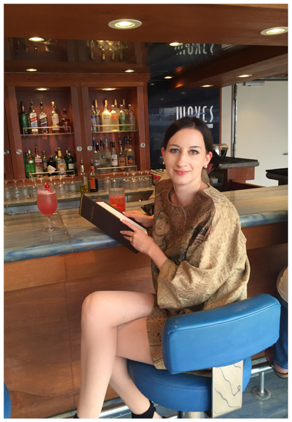
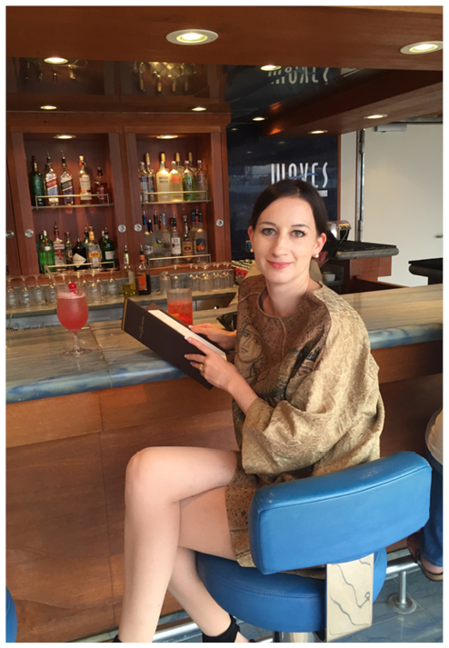

Seven Seas Voyager - die public Bereiche
Einer unserer Lieblingsplätze war auf der Veranda der Horizon Lounge. Hier gab es vorzügliche Cocktails und wir genossen so manchen Digestif nach dem Abendessen.
Die anderen Bereiche wie der Connoisseur Club, das Casino, die Fitness Einrichtugen, das Canyon Ranch® Spa machen das Bordleben sehr angenehm und abwechslungsreich.
Die Pool-Bar haben wir auch öfters besucht und bei erlesenen Getränken die eine oder andere Sternschnuppe entdeckt.